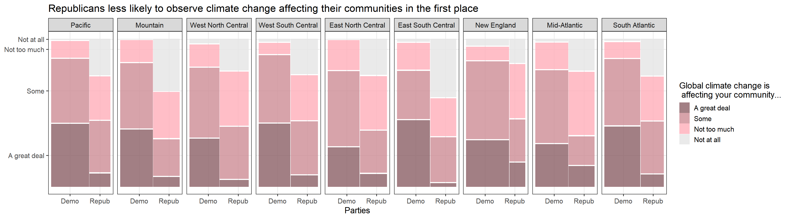

Chapter 5 Results
5.1 Question 1
We first explore the answer to the following question:
Q1. Although the survey pointed out supported parties as a relevant factor, are educations or incomes also related to the opinion toward climate change issues (ex. whether the climate change is due to human activities or just natural patterns in global climate)? We address this issue upon trying to control other relevant effects such as supported parties.
To see this, noting that the existing report suggests the strong relationship between a party one supports and his/her opinion. Hence, we should control parties, when we conduct an analysis for this question.
Hence, we drew some mosaic plots of opinion to climate change issues with faceting supported parties (Democratic and Republican) for several candidate of attributes. Among them, we recognized a relationship between age categories and the opposition to nuclear power uses.
Here, we restricted to one of the most main topics of this survey, that is, whether human activities contribute to the climate change. As a result, we recognized some attributes relating to the opinion.
The first one is age:
 As seen from the plot above, while age is not likely to have a clear relationship for Democrats, younger Republicans are more likely to think humans are responsible for the climate change . It is of interest that what the reason is. There are several candidate factors to explain this. There are many hypotheses that tried demystifying the reason such as overlap with the serge of international discussion on climate change and their puberty, or they have high interest because they have to live longer from now. For more detail, see this (Columbia Climate School):
As seen from the plot above, while age is not likely to have a clear relationship for Democrats, younger Republicans are more likely to think humans are responsible for the climate change . It is of interest that what the reason is. There are several candidate factors to explain this. There are many hypotheses that tried demystifying the reason such as overlap with the serge of international discussion on climate change and their puberty, or they have high interest because they have to live longer from now. For more detail, see this (Columbia Climate School):
https://news.climate.columbia.edu/2019/02/04/age-gap-environmental-politics/
Actually, this result is quite consistent with the results written in the URL above.
Another finding is that most of people (almost 80-90%) think human activities more or less contribute to the global climate change. The difference is on the degree of impacts.
The next relevant attribute that we have found is income:

##
## Pearson's Chi-squared test
##
## data: A
## X-squared = 7.1966, df = 6, p-value = 0.3031Here, we see the contrasting results on the both parties, which is really interesting. Democrats with higher or middle income are more likely to think human activities contribute to more, while Republicans with higher or middle income are less likely to do. Since income and education levels are correlated, it would not be surprising if we had such an opposite tendencies on the education level. However, since the tendency is not so clear for Republicans on education (see below), we suspect that there may be some more reason of this result in addition to that it is just that education is a confounding factor.
The last relevant factor is sex.

Although the difference itself is relatively small, it is quite interesting that male are a little more likely to think that human activities contribute to the climate change, but opposite for Republicans. Actually, it is consistent with the proportion of opposition to coal mining (see Question 3), which may mean that male Democrats are little more likely to affirmative to the environmental protection.
Lastly, we did not detect any relevant relationship with (1) regions, (2) whether one lives in metropolitan area or not, or (3) marital status, thereby omitted the results.
5.2 Question 2
Q2. From the survey, it is seen that Democrats are more likely to say that the federal government is doing too little for key aspects of the environment, and Democrats are more likely to think the climate change is due to human activities. With respect to this, are Democrats (Republicans) also more (less) recognizing that the climate change is affecting their local communities (no matter what the reason of the change is) in the first place? We address this issue upon trying to control other relevant effects such as regions.
The existing report above suggests people living in the Pacific region are more likely to experience some climate change. Here, it is known that there are more Democrats in the Pacific region. Hence, we should control regions, when we conduct an analysis for this question. Specifically, for every region we calculated the proportions of those who are recognizing that the climate change is affecting their community among each party, comparing the proportions of the two parties in each region.
Hence, we drew again some mosaic plots representing the proportions of recognizing that the climate change is affecting their local communities.
There are two types of flows of questions in the user interface of the survey. Thus, there are two types of variables that represent the proportions. However, since both ended up with similar results, we present only one as below:
One can see in every region, there are large difference between the two parties of the proportion of the extent to which the climate change is affecting their communities.
It implies that not only Republicans are likely to attribute climate change to natural phenomenon but also they are less likely to observe climate change affecting their communities in the first place. Hence, there are composite reasons yielding the difference of attitude towards climate change between those parties.
We think that the question whether climate change is affecting our communities is easier to handle than the one whether climate change is heavily due to human activities or not if any. Therefore, this result tells us that we should first review research regarding the existence of impact of climate change on our communities, and if any, that would be the start point to discuss the impact of human activities on climate change. This is where Data Science comes in since it essentially requires statistical points of view.
In this regard, lastly we want to point out that there are both types of climate change that have relatively small or large differences in proportions between the two parties. Specifically, (1) more frequent wildfires, (2) rising sea levels, and (3) water shortages have relatively smaller differences, while (4) harm to animal wildlife and their habitats and (5) damage to forests and plant life have larger ones (probably since they are not so familiar affairs to our daily lives) as seen from the two illustrative plots below. Thus, reviewing research regarding the latter ones are considered to be of high priorities.

5.3 Question 3
Q3. From the survey, it is seen that majority of people think that they should decrease the oil drilling or coal mining, and they should increase natural electricity generations such as one by wind or land heat. However, their opinion is separate with respect to whether they should increase the new clear power plants (Yes:49% vs No:49%). Here, how do factors (sex, age, party, income, regions,…) relate to the choice Yes and No.
To see this, we can calculate and compare the proportions of Yes and No for each candidate factor such as sex, age, party, income and regions. We can also conduct the chi-squared t tests to add independent analyses.
Actually, we saw that supporting parties are highly related to the opposition rates. Higher for Democrats, and lower for Republicans. Hence, similarly to Q1, we drew some mosaic plots with faceting supported parties (Democratic and Republican) for several candidate of attributes.
Among them, we recognized a relationship between some attributes and the opposition to nuclear power uses.
First one is age categories similarly to Question 1.

As seen from the graph, Democrats have higher average level of opposition rate to nuclear uses than Republicans. It is interesting that while people who support Democrats have similar opposition rates over all age categories, for those who support Republican, younger ones have higher opposition rates. In fact, the same tendencies are observed from any other energy resources no matter they have lower opposition rate (solar power use) or higher one (coal mining) in average.
This may mean that younger people are not only humans are responsible for the climate change (Question 1), but also are more likely to have interest in protection of environment. Republican party should pay attention to whether younger Republican will become more favor to nuclear uses, or their opinion will not change in the future.
The next relevant attribute is income (or education) levels.

As seen from above, while income levels are not related to opposition rates for Democrats, there seems to be a decreasing relationship for Republicans. As income and education levels are correlated, we see the similar relationship for education level, too. However, we are not sure whether the education level is a confounding factor or not, since it is difficult to come up with the reason why higher education drives only Republicans (not Democrats) to be in favor of nuclear power use more. Here is one of the limitation of our EDVA, but it can be a motivation for other research or policies.
The last relevant attribute is sex. As seen from the plot below, there are relatively large difference between sex.

Note that since some people think that nuclear power is useful to decrease the coal or oil burning, therefore effective to protect natural environment. The result above may signify that men are more like to think that way.
Indeed, comparing this result with the one for coal mining, there are less differences between sex. As we mentioned earlier, it is probably consistent with the result of Question 1.
Lastly, we did not detect any relevant relationship with (1) regions, (2) whether one lives in metropolitan area or not, or (3) marital status, thereby omitted the results.